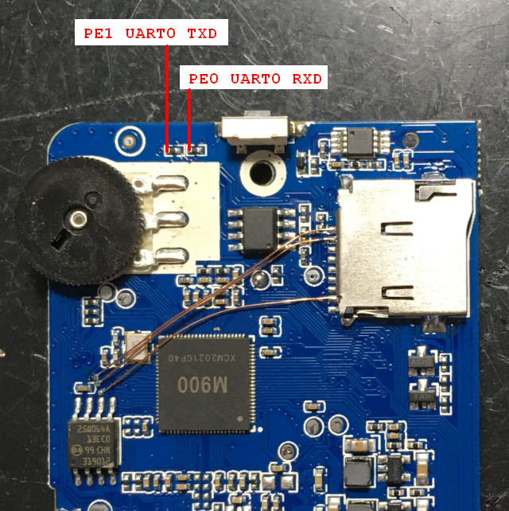
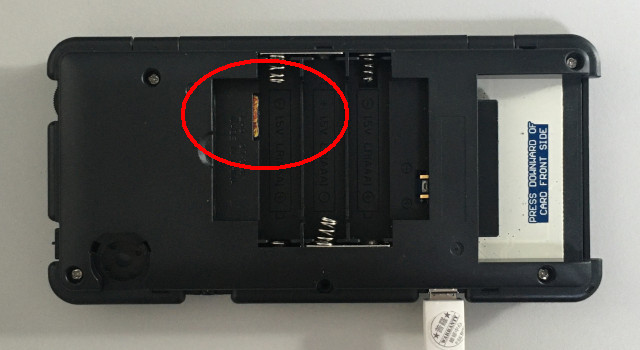
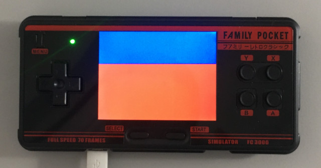
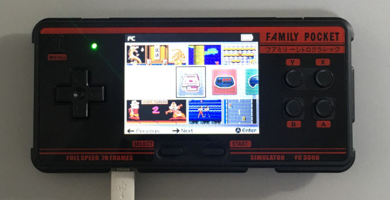

或者拉出UART0
司徒使用GNU GCC編譯環境，安裝方式如下：
$ sudo apt-get install gcc-arm-none-eabi-*
燒錄軟體則是sunxi-tools
$ cd $ wget https://github.com/steward-fu/website/releases/download/lichee-nano/sunxi-tools.7z $ 7zr x sunxi-tools.7z $ cd sunxi-tools $ make clean $ make
由於Allwinner韌體會做Checksum檢查，因此，需要編譯mksunxi工具，該工具可以重新計算Checksum
$ cd $ wget https://github.com/steward-fu/website/releases/download/lichee-nano/mksunxi.c $ gcc mksunxi.c -o mksunxi
FC3000掌機不需要改機即可從MicroSD開機，也就是不需要改機就可以跑Linux系統，如果想開發FC3000程式，可以把UART1拉出來，腳位如下
或者拉出UART0



